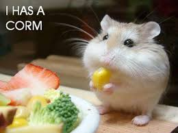

Squirrels are members of the family Sciuridae, consisting of small or medium-size rodents. The family includes tree squirrels, ground squirrels, chipmunks, marmots (including woodchucks), flying squirrels, and prairie dogs. Squirrels are indigenous to the Americas, Eurasia, and Africa, and have been introduced to Australia.[1] The earliest known squirrels date from the Eocene and are most closely related to the mountain beaver and to the dormouse among living rodent families.

apple
xhtml
css
This is something to read,bala bala bala
Say Hello to Big D
He supposed to be grey.
Within the former Soviet Union, it occurs in Transcaucasia, notably in Armenia, Azerbaijan, Georgia and Turkmenistan.[1] Outside the ex-USSR, it occurs in Iran, Iraq and Turkey.[2][3] It is extinct in Israel, Lebanon and, more recently, in Syria.[2]
Like many large mammals, the Syrian brown bear population is declining due to habitat loss, and poaching. They are a popular target for big game hunters in the Middle East and in Asia.[4] In addition, bear bile (ursodeoxycholic acid) is a valuable commodity because of its use in traditional Chinese medicine as an assumed cure for rheumatism, poor eyesight and gall stones.